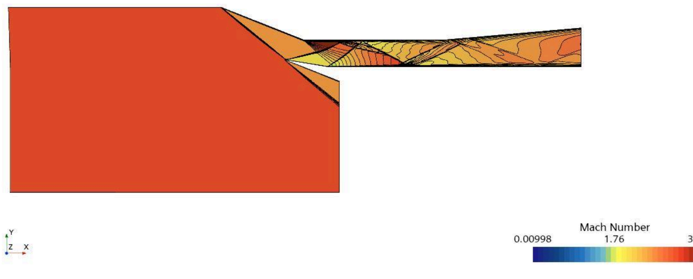

Project overview
A two-dimensional inlet geometry adapted from a published supersonic inlet isolator study was simulated to understand shock formation and internal flow behavior.
Methods
STAR-CCM+ compressible RANS simulations used the SST k–ω turbulence model. Cases were investigated at inlet Mach numbers 2, 2.41, and 3, with reported total pressure of 5.4 bar, total temperature of 305 K, and incidence of −10°.
Results
Computed density, pressure, temperature, and Mach fields reveal internal shock-wave structures. The Mach 2.41 case was qualitatively compared with experimental flow patterns in the reference study.
Limitations
The original report notes incomplete pressure-ratio plotting and limited CFD experience at the time. Results are presented as an exploratory course project, not as a validated predictive model.
This is a student research project report, not a peer-reviewed publication. The linked PDF documents the full methodology, figures, and limitations.